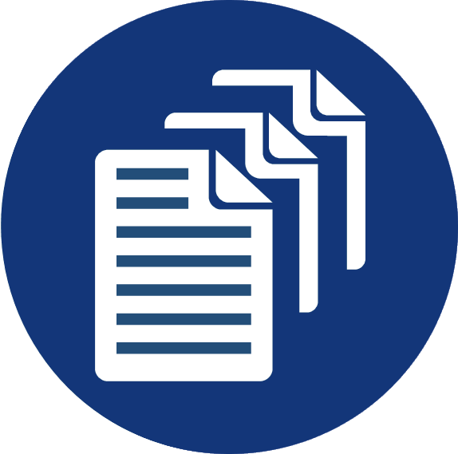

<mat-sidenav-container class="sidenav-container">
  <mat-sidenav #drawer class="sidenav"
      [attr.role]="(isHandset$ | async) ? 'dialog' : 'navigation'"
      [mode]="(isHandset$ | async) ? 'over' : 'side'"
      [opened]="!(isHandset$ | async)">
    <mat-toolbar ><a  routerLink="/home"></a></mat-toolbar>
    <mat-nav-list>
      <a mat-list-item href="#" routerLink="/home">Accueil</a>
      <a mat-list-item href="#" routerLink="/demande-service">Demandes de service</a>
      <a mat-list-item href="#" routerLink="/demande-investissement">Demandes d'investisesment</a>
    </mat-nav-list>
  </mat-sidenav>
  <mat-sidenav-content>
    <mat-toolbar color="primary">
      <button
        type="button"
        aria-label="Toggle sidenav"
        mat-icon-button
        (click)="drawer.toggle()"
        *ngIf="isHandset$ | async">
        <mat-icon aria-label="Side nav toggle icon">
          <div class="menu"></div>
          <div class="menu"></div>
          <div class="menu"></div>
      </mat-icon>
      </button>
          <button mat-raised-button class="btn-danger" routerLink="/login" style="position:absolute;right:16px;" (click)="deconnect()">Deconnexion</button>
      </mat-toolbar>
      <ng-content select=".txt">

      </ng-content>
          <!--content-->
      
  </mat-sidenav-content>
</mat-sidenav-container>